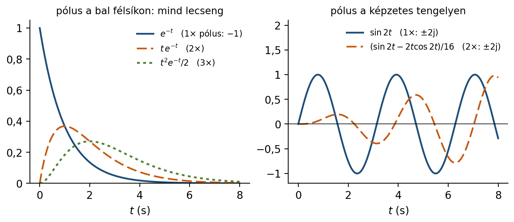

Ez a kifejezés nincs benne a Definíció,
tulajdonságok és transzformációs táblázat alfejezet táblázatában. De
ha egyszerű törtek összegeként tudjuk felírni, minden tag benne lesz.
Ezt a lépést nevezzük részlettörtekre bontásnak
(partial fraction decomposition), az eredmény visszatranszformálását
inverz Laplace-transzformációnak (inverse Laplace
transform), jele
.
A módszerből egy sokkal fontosabb dolog is kiolvasható: a válasz milyen
elemi viselkedésekből áll össze, és mi dönt arról, hogy gyors, lassú
vagy lengő lesz.
6.2.2 Szemlélet
Az
-tartománybeli
törtben a nevező gyökei, a pólusok (poles), kijelölik
az elemi törteket. Minden pólushoz tartozik egy időfüggvény, a
módus (mode): valós pólushoz exponenciális, komplex
póluspárhoz csillapodó vagy növekvő szinusz. A számláló nem hoz létre új
módust, csak a módusok súlyát (amplitúdóját és fázisát) határozza
meg.
Mielőtt kipróbálnád, tippeld meg: három pólusunk
van,
,
valamint
.
Melyik módus határozza meg a válasz késői viselkedését? Mi változik, ha
a valós pólust a képzetes tengelyhez közelebb,
-re
viszed, a párt pedig
-hez?
Statikus változat (mint a PDF-ben)
Három pólus impulzusválasza módusokra bontva
A leglassabban lecsengő módus marad meg legtovább: ha a valós rész a
legkisebb abszolút értékű (a pólus a képzetes tengelyhez a legközelebb
van), az a pólus uralja a késői viselkedést. A gyors módusok csak az
elején látszanak.
6.2.3 Valódi és nem valódi
törtfüggvény
Legyen
,
ahol
és
polinom,
,
.
Definíció. Az
valódi (proper), ha
,
szigorúan valódi (strictly proper), ha
,
és nem valódi (improper), ha
.
Ha
,
először polinomosztást végzünk:
,
ahol
.
A
konstans tagja
impulzusnak, magasabb fokú tagjai az impulzus deriváltjainak felelnek
meg. Példa:
mert a számlálóból a nevezőt egyszer kivonva
marad. A bontás csak a szigorúan valódi maradékra vonatkozik.
Elfelejtett polinomosztás esetén a módszer hibás, nem csak pontatlan
eredményt ad. A fizikai rendszerek átviteli függvényei jellemzően
valódiak.
6.2.4 Egyszeres valós pólusok és a
letakarás
Ha
és a pólusok különbözők, akkor
Az
együtthatót a pólus reziduumának (residue) nevezzük. Az
kiszámításához szorozzuk meg
-t
-vel,
és vegyük az
helyen: a bal oldalon csak az adott pólus tényezője egyszerűsödik ki, a
jobb oldalon minden más tag nullává válik, mert megmaradt bennük az
szorzó. Tehát
Szavakkal: letakarod a nevező
tényezőjét, és a maradékba behelyettesíted
-t.
Ez a letakarás (cover-up) módszere. A második alak a
derivált értékével akkor kényelmes, ha a nevező nincs tényezőkre
bontva.
6.2.5 Komplex póluspár
Ha az együtthatók valósak, a komplex pólusok konjugált párban jönnek:
és
.
A reziduumuk is konjugált:
és
.
Írjuk
poláris alakban (Komplex számok és a komplex
exponenciális), és adjuk össze a két tagot:
A módus tehát csillapodó szinusz: amplitúdója
,
fázisa
(a felső pólus,
reziduumának szöge), a burkoló
,
a lengés körfrekvenciája
.
Kézzel gyakran kényelmesebb a teljes négyzetté
alakítás. Az
tagot a táblázat két sora szerint írjuk fel:
ahol a számlálók összevetéséből
és
.
6.2.6 Többszörös pólusok
Ha egy
pólus
-szeres,
a bontásban minden hatványa szerepel:
A legmagasabb tag együtthatója letakarással adódik:
.
A többi deriválással:
.
Kétszeres pólusnál tehát
a „letakart” kifejezés deriváltja.

Többszörös pólusok módusai
A bal félsíkban a
szorzó csak késlelteti a lecsengést, mert az exponenciális végül
legyőzi. A képzetes tengelyen viszont a kétszeres pólus
növekvő lengést ad: ezért számít a stabilitásnál, hogy
hányszoros egy tengelyen lévő pólus (a BIBO- és
belső stabilitás alfejezet témája).
Pólus = módus. Összefoglalva: a pólus valós része a
lecsengés vagy növekedés sebességét (az időállandó
),
a képzetes rész a lengés körfrekvenciáját, a multiplicitás a
hatványait adja. Ha az egyik pólus (vagy pár) jóval közelebb van a
képzetes tengelyhez, mint a többi, a késői válasz alakját szinte csak ez
szabja meg: ez a domináns pólus (dominant pole),
amelyet a Magasabb rendű rendszerek, domináns
pólusok és zérusok hatása alfejezet tárgyal részletesen. Az
általános inverz formula a komplex vonalintegrálokra épülő
reziduumtételből következik; mérnöki gyakorlatban a racionális törtekre
ez az algebrai út elég.
Mit jelent ez a szabályozásban? A visszacsatolás a
zárt kör pólusait helyezi át. Ha a motor sebességszabályozója a zárt kör
leglassabb pólusát
-ről
-re
viszi, a késői lecsengés időállandója
s-ról
s-ra rövidül. A tervezés nagy része a következő kérdés körül forog: hova
tegyük a pólusokat, és mekkora beavatkozó jel az ára? A részlettörtes
alak az a híd, amely a pólusok helyétől az időbeli viselkedésig vezet. A
számláló és a zérusok hatását (például a túllövés növelését) a módusok
súlyain keresztül lehet majd megérteni.
6.2.7 Pólushely és válaszalak: a
térkép
Mielőtt számolni kezdenél, érdemes a pólusokat felrajzolni, mert az
alak számolás nélkül kiolvasható. A táblázatban
egy pozitív,
egy körfrekvencia.
Pólus(ok)
Módus
Viselkedés
lecsengés,
állandó
megmarad
korlátlan növekedés
csillapodó lengés
tartós lengés
növekvő lengés
kétszeres
előbb nőhet, majd lecseng
kétszeres
lineáris növekedés
Hasznos hüvelykujj-szabály: egy
módus
időállandó, azaz
idő alatt
alá csökken. A
pólus módusa tehát kb.
s alatt tekinthető lezártnak, a
-ösé
már
s alatt.
A bontás lépései. (1) Ellenőrizd, hogy a tört
szigorúan valódi-e; ha nem, ossz. (2) Határozd meg a pólusokat és a
multiplicitásukat. (3) Számold ki az együtthatókat (letakarás, deriválás
vagy teljes négyzet). (4) Olvasd ki a táblázatból az időfüggvényeket.
(5) Ellenőrizz: a
érték és a nagy
-re
várt határérték egyezik-e a józan ésszel?
6.2.8 Kézi számpélda
1. A motor ugrásválasza.
.
A nevező másodfokú tényezőjének gyökei
,
vagyis
és
.
Letakarással:
(pólus
):
;
(pólus
):
;
(pólus
):
.
Ellenőrzés:
,
a motor álló helyzetből indul. A
pólus módusa kb.
s alatt elhal, a lassú,
-es
módus dominál: ez az időskála-szétválasztás, amelyet a Villamos és elektromechanikus rendszerek: a
DC-motor alfejezetből ismersz.
2. Komplex póluspár.
.
A pólusok
és
.
Reziduummal:
.
A
pólusnál
.
Ennek abszolút értéke
,
szöge
rad, így
Teljes négyzettel:
,
tehát
.
Itt
,
,
,
,
ezért
és
:
A két alak ugyanaz, hiszen
és
.
Ellenőrzés:
.
3. Többszörös pólus.
.
Letakarással
.
A
a
deriváltja:
,
az
helyen
.
A
pólus reziduuma
.
Tehát
4. Becslés a domináns módussal. Hagyjuk el a motor
válaszából a gyors,
-ös
tagot:
.
Mennyit tévedünk? Számoljuk ki három időpontban:
(s)
pontos (rad/s)
közelítés (rad/s)
eltérés
Az elején a közelítés még negatív sebességet is ad, ami a valóságban
lehetetlen: a kezdeti szakaszt a gyors módus formálja.
s-tól viszont az eltérés a végérték
-a.
Ezért lehet a motort sok tervezési feladatban elsőrendűnek tekinteni, de
csak addig, amíg a szabályozó nem akar a
s-os időskálán beavatkozni.
Gyors ellenőrzés tetszőleges
-ben.
A bontás helyességét visszahelyettesítéssel ellenőrizheted: a 3.
példában
-nél
a bal oldal
,
a jobb oldal
.
Ha a két érték eltér, valamelyik együttható hibás.
6.2.9 Kód
A scipy.signal.residue a reziduumokat, a pólusokat és a
polinomhányadost adja vissza; a
controlkit.laplace.partial_fractions ennek burkolója, amely
a közel egybeeső pólusokat összevonja, a modes pedig valós
módusokká alakítja a párokat:
import numpy as npfrom controlkit import laplace as lp, modelsP = models.DCMotor().tf_speed()num, den = P.num, np.polymul(P.den, [1, 0]) # ugrásválasz: P(s) / sfor term in lp.partial_fractions(num, den).terms:print(f"pólus {term.pole.real:8.4f} reziduum {term.coeff.real:9.5f}")t = np.linspace(0, 3, 31) # a step() egyenközű rácsot várpick = [0, 2, 5, 10, 30] # t = 0; 0,2; 0,5; 1; 3 sprint("w(t) inverzzel: ", np.round(lp.inverse(num, den, t)[pick], 5))print("w(t) szimulációval:", np.round(P.step(t)[pick], 5))
Alapeset
(,
,
).
Az állapotsor
-ot
ír.
s után a görbe szinte csak a pár módusát követi: az
a leglassabb.
Domináns valós
(,
pár
):
kb.
s után az
összeg ráfekszik a valós pólus módusára, pedig a pár amplitúdója
()
nagyobb. A dominanciát a lecsengési sebesség dönti el, nem a kezdeti
amplitúdó.
Kétszeres pólus
():
megjelenik a
tag. Húzd
-et
lassan
felé: az együtthatók egyre nagyobbak, ellentétes előjelűek, az összegük
mégis szelíd marad. A teljes egybeesésnél egyetlen háromszoros pólus
módusa marad
().
Instabil pár
():
a lengés nő. Egyetlen jobb félsíkbeli pólus elég ahhoz, hogy a teljes
válasz ne csengjen le.
6.2.11 Tipikus hibák
Tünet: a
-ra
adódó érték nem egyezik a kezdeti feltétellel. Ok: nem
valódi törtet bontottál polinomosztás nélkül. Javítás:
előbb
ellenőrzése, szükség esetén osztás.
Tünet: többszörös pólusnál hiányzik az
tag, csak
szerepel. Ok: csak a legmagasabb együtthatót számoltad
letakarással. Javítás: minden hatványhoz külön tag
kell, az alsóbbak deriválással.
Tünet: a komplex pár amplitúdója fele a valódinak,
vagy a fázis előjele fordított. Ok: lemaradt a
-es
szorzó, vagy a konjugált pólus reziduumát vetted.
Javítás:
és
,
ahol
a
pólusé.
Tünet: a szög
-ot
téved. Ok:
negatív valós résznél. Javítás:
használata.
Tünet: a „gyors” módus elhagyása után a válasz
-ban
nem a kezdeti értékről indul. Ok: a domináns közelítés
csak a gyors módusok lecsengése után érvényes. Javítás:
a kezdeti szakaszhoz a teljes bontást használd, vagy mondd ki az
érvényességi tartományt.
Tünet: óriási reziduumok, és azt hiszed, a rendszer
instabil. Ok: két közeli pólus reziduumai nagyok, de
ellentétes előjelűek. Javítás: a stabilitást a pólusok
helye dönti el, nem az együtthatók nagysága.
6.2.12 Önellenőrzés
Mikor kell polinomosztást végezni, és mit ad időtartományban a
konstans hányados?
Mit jelent egy módus, és mit olvasol ki a
pólusokból?
Miért ad egy komplex póluspár valós időfüggvényt?
Milyen időfüggvény tartozik a
törthöz?
A
,
és
pólusú rendszerben melyik módus uralja a késői választ?
6.2.13 Feladatok
(A) Bontsd részlettörtekre és transzformáld vissza:
.
(A) Ugyanez a
törttel. Mi a határértéke
esetén?
(B) Transzformáld vissza:
.
(B) Transzformáld vissza a
törtet teljes négyzettel, majd add meg amplitúdó–fázis alakban is.
(B) Számolás nélkül írd fel a válasz alakját, ha a
pólusok
,
és
.
Melyik tag dominál nagy
-re?
(C, programozós) Az
törthöz számold ki a reziduumokat, és mutasd meg numerikusan, hogy
közel van a
függvényhez. Mekkora a legnagyobb eltérés
-re?
Egy racionális
inverze részlettörtekre bontással adódik; nem valódi törtnél előbb
polinomosztás kell (a hányados impulzust ad). Egyszeres
pólus reziduuma letakarással
,
a tag
.
Komplex pár
esetén
,
vagy teljes négyzettel
.
-szeres
pólus a
,
tagokat adja. Minden pólus egy módus: a valós rész a
lecsengést, a képzetes a lengést szabja meg; a képzetes tengelyhez
legközelebbi pólus dominál. A számláló csak a módusok súlyát
befolyásolja.
6.2.15 Megoldások
1.
,
.
;
ellenőrzés:
.
2.
,
.
.
3.
.
,
,
.
A
pólus:
.
;
.
4.
,
tehát
,
,
,
:
,
.
.
5.
.
Nagy
-re
a
állandó marad (ha
),
a lengés lassan,
s időállandóval hal el, a
módus kb.
s alatt eltűnik.
6.
,
,
vagyis
.
t = np.linspace(0, 10, 10001)f = lp.inverse([1], np.poly([-1, -1.01]), t, tol=1e-5)g = t * np.exp(-t)i =int(np.argmax(np.abs(f - g)))print(f"legnagyobb eltérés {np.abs(f - g).max():.5f}, t = {t[i]:.2f} s (f = {f[i]:.4f})")
legnagyobb eltérés 0.00269, t = 1.99 s (f = 0.2689)
Kb.
-os
eltérés: a nagy reziduumok kioltják egymást, és a közel kétszeres pólus
a
viselkedést utánozza. Ezért veszi a partial_fractions a
tol-nál közelebbi gyököket többszörösnek; itt szándékosan
kisebb tol-t adtunk.
6.2.15.1 Válaszok az önellenőrző
kérdésekre
Ha
;
a konstans hányados
impulzust ad.
Egy pólushoz tartozó elemi időfüggvény; a
pár
burkolójú,
rad/s körfrekvenciájú lengés, kb.
s időállandóval.
A két reziduum és a két exponenciális egymás konjugáltja, az
összegük kétszeres valós rész.
.
A
pólusé
(
s), feltéve, hogy a reziduuma nem (közel) nulla.